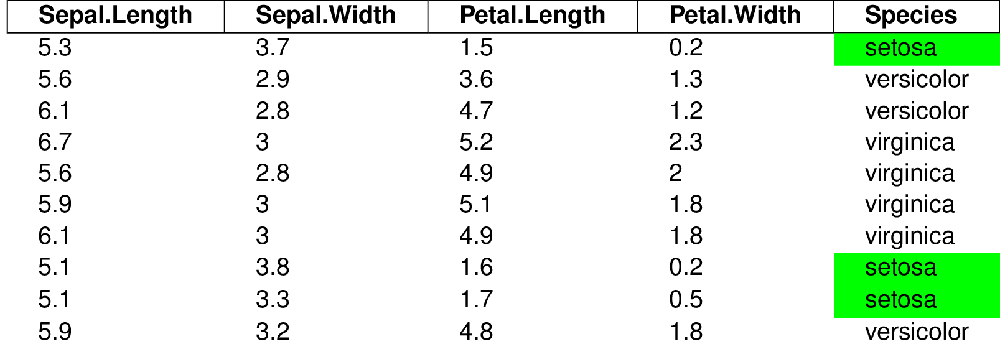
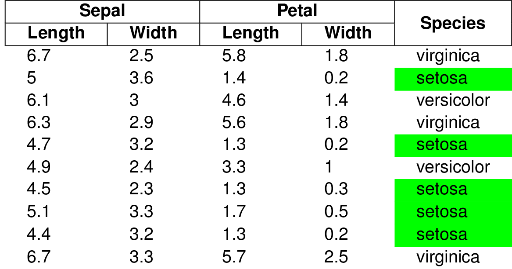

styledTables is an R package that makes it possible to export a data.frame as beautifully styled Excel and LaTeX table.
Produce tables, which you want to look at.
Use the styled_table() function to turn a data.frame or matrix into a StyledTable class object. Then apply all the [styling functions] you want to by using the pipe operator %>% and return the StyledTable object at the end of your Rmd chunk so that knitr can do the printing (the print() function of knitr is overloaded by styledTables).
library(styledTables)
set.seed(42)
# Create the styled table
st1 <- iris[sample(seq_len(nrow(iris)), 10),] %>%
styled_table(keep_header = TRUE)
# Apply several styling functions
st1 <- st1 %>%
set_border_position("all", row_id = 1) %>%
set_bold(row_id = 1) %>%
set_fill_color("#00FF00", col_id = 5, condition = X == "setosa")
# Return the styled table at the end of the Rmd-chunk in order to print it
st1
The function styled_table() allows you to put in multiple data.frames/StyledTable objects/matrices, which will be concatenated vertically. This may be particularly useful for adding a custimized table header to the table. With the functions merge_cells() and merge_equal_cells() multiple cells of a StyledTable object can be merged together.
library(styledTables)
# Create the styled table body
st_body <- iris[sample(seq_len(nrow(iris)), 10),] %>%
styled_table %>%
set_fill_color("#00FF00", col_id = 5, condition = X == "setosa")
# Create the styled table header
st_header <- c(
"Sepal",
"",
"Petal",
"",
"Species",
"Length",
"Width",
"Length",
"Width",
""
) %>%
matrix(nrow = 2, byrow = TRUE) %>%
styled_table %>%
set_border_position("all") %>%
set_bold %>%
merge_cells(col_id = 1:2, row_id = 1) %>%
merge_cells(col_id = 3:4, row_id = 1) %>%
merge_cells(col_id = 5, row_id = 1:2) %>%
set_horizontal("center")
# Concatenate the styled table header and body
st2 <- styled_table(
st_header,
st_body
)
# Return the styled table at the end of the Rmd-chunk in order to print it
st2
For the creation of Excel tables the xlsx package is used. Create a xlsx workbook and use the write_excel() function to insert the StyledTable object in a worksheet.
Use the function write_pdf() and write_png() to create PDF and PNG images of the styled table.
The function create_latex_table() returns the LaTeX code of the StyledTable object. You can use this function to include your StyledTable inside of an Rnw file. Therefore you must load several LaTeX packages in the LaTeX preamble (before \begin{document}):
\documentclass[a4paper]{article}
\usepackage[margin=1.0in]{geometry}
\begin{document}
<<>>=
library(styledTables)
# Create the styled table
st1 <- iris[sample(seq_len(nrow(iris)), 10),] %>%
styled_table(keep_header = TRUE)
# Apply several styling functions
st1 <- st1 %>%
set_border_position("all", row_id = 1) %>%
set_bold(row_id = 1) %>%
set_fill_color("#00FF00", col_id = 5,
condition = X == "setosa")
# Print the table
st1
@
\end{document}{kind=link}